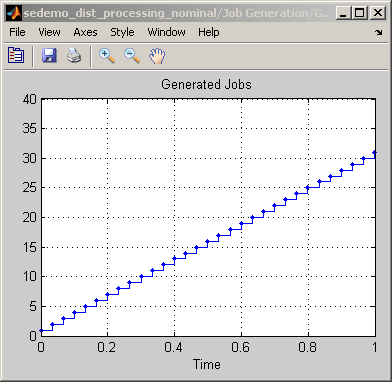
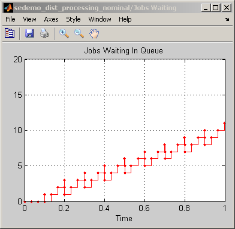
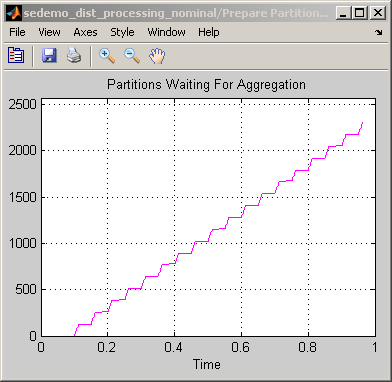
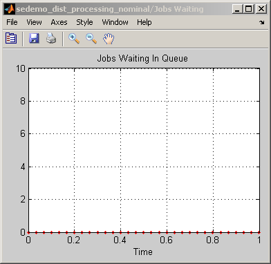
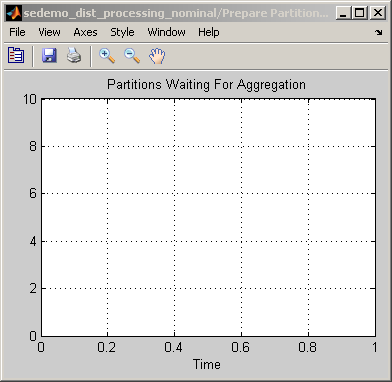
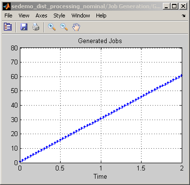
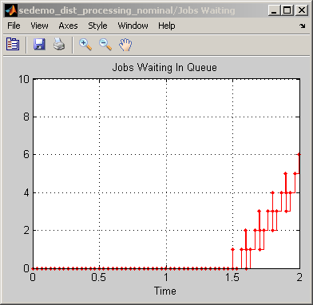
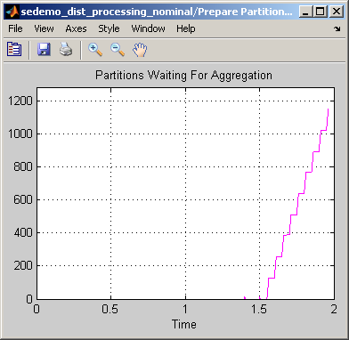
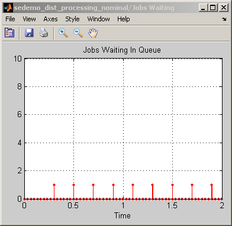
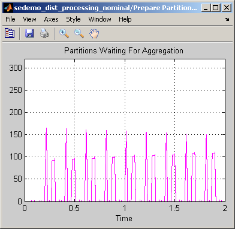

Distributed Processing Resource Modeling
Contents
Overview
This model describes the architecture resources for processing a series of jobs using distributed computed resources. The model, building on the ideas in the Distributed Video Processing explore the resource constraints associated with a selected architecture.
The figure below illustrates the job and multiprocessor system.

You can interpret the system as a way to perform
- Signal processing of audio or video frames
- Processing and routing of communication data packets or frames
- Rendering of animation data
- Routing and completion of service requests
The system generates jobs regularly. Assume that the complexity of a particular job forces the system to partition the job, process the partitions independently, and later reassemble the results into one block of data.
Structure
The model includes these components:
- The Job Generation subsystem, which generates jobs at a fixed rate and assigns each job several pieces of data that represent the processing time constants. In this part of the model, each entity represents a job.
- A front-end processor, which partitions jobs using multiple blocks. The elabration of the processor is given below the list.
- The Prepare Partitioned Task for Aggregation subsystem, which copies the Aggregation_Time attribute's value to the Partitioning_Time attribute. As a result, when the partition reaches the server at the top of the model, the service time reflects aggregation time. This subsystem also changes the value of a flag attribute that indicates that the entity needs to be aggregated, not partitioned.
- A feedback connection in which the entities representing partitions arrive at the same server (Partitioning & Aggregation Processing) that models the initial delay for newly generated jobs.
- A sink block labeled Processed Jobs that absorbs each partition that departs from the server. A given partition does not need to wait for the other partitions of the same job to complete their processing.
The front-end processor mentioned before uses the following blocks to partition jobs.
- The block labeled Partitioning & Aggregation Processing is a server that models an initial delay before the first partition is available
- The Generate N Partitioned Tasks subsystem creates a stream of partitions at a given rate. The number of partitions per job is the value of the job's Partition_Count attribute. In this subsystem, the input entities represent jobs and the output entities represent partitions.
- The block labeled Task Queue stores the partitions that are waiting for processing.
- The block labeled Task Processing Delay processes the partitions.
Experimenting with the Model
To explore the resource constraints associated with the architecture in this model, try the following:
1) Run the simulation with default settings. From the plots labeled Partitions Waiting For Aggregation and Jobs Waiting In Queue, you can see that both jobs and partitions accumulate in the queues while the processors are always busy.
  2) To attempt to resolve the congestion, increase the number of processors that represent overhead in the partitioning and aggregation process. To do this, open the dialog box of the block labeled Partitioning & Aggregation Processing and change the Number of servers parameter from 1 to 16.
3) Run the simulation again. The plots indicate that the queues now remain empty.
 4) Run the simulation for 2 seconds. The plots indicate that adding more processors merely delays the congestion instead of resolving it.
  5) Undo step 2 by setting the Number of servers parameter in the block labeled Partitioning & Aggregation Processing to 1.
6) Increase the number of processors that represent the time to process each partition. To do this, open the dialog box of the block labeled Task Processing Delay and change the Number of servers parameter from 128 to 256.
7) Run the simulation again. The plots indicate that the queues remain empty for a long time. The congestion has been resolved.
 Experimenting Further
To expand on the architecture, you can refine the model in any of these ways:
- Include delays due to data access over a network
- Introduce probabilistic values for various processing times to assess the robustness of the solution
- Include details of the processors' algorithms or hardware architecture